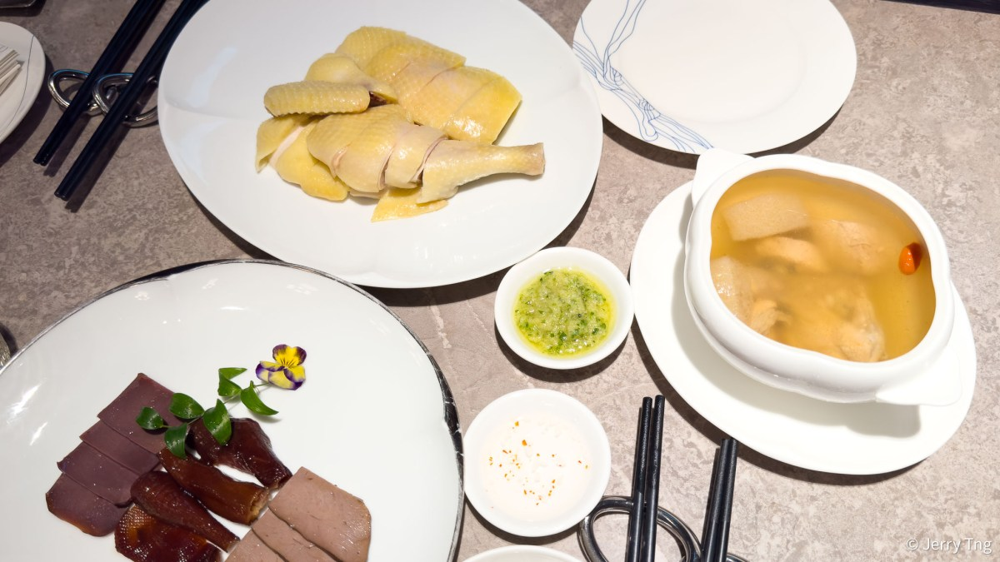

Guangzhou Weekend Planner
Pearl River · Michelin 2-Star · Cantonese Identity
32-star venues
03-star venues
Oct–Marideal window
240hvisa-free transit
Lines 1·3·8metro covers all
01
Pick Your Restaurant
This choice constrains your calendar
Imperial Treasure
★★ 2 Stars
held since 2020
Imperial Treasure Fine Chinese Cuisine
Classic Cantonese Banquet + Dim Sum
Hours Daily 11:00–14:30 / 17:30–22:00[5]
Price ¥¥¥ à la carte
Deposit None required
Where 5/F IGC Mall, 222 Xingmin Rd, Tianhe
✓ Pick if: Groups, flexibility, or dim sum is the priority.
Only 2-star open for lunch daily. Japanese-designed interior; private rooms available.[2]
Only 2-star open for lunch daily. Japanese-designed interior; private rooms available.[2]

★★ 2 Stars
since 2019 — 7-year streak
Creative Cantonese · Mandarin Oriental
Hours Daily; Sat–Sun brunch 10:00–15:00[6]
Price ¥¥¥ à la carte
Deposit None required
Where 3F Mandarin Oriental, 389 Tianhe Road
✓ Pick if: Hotel luxury setting, longest 2-star streak in the city, signature glass pigeon and Hele crab.[21]
⚠ Wine list is limited; BYOB is an option.
⚠ Wine list is limited; BYOB is an option.
Taian Table
★★ 2 Stars
since 2021 (inaugural guide)
European Contemporary Tasting Menu
Price ¥1,998–¥2,388 + 10% service charge[3]
Deposit ¥1,000/person required at booking
Where 2F LN Garden Hotel, Huanshi East, Yuexiu
✓ Pick if: Maximum exclusivity (22 seats), European tasting preference, or a deliberate non-Cantonese detour.[20]
⚠ Book weeks ahead. Structurally foreign to Guangzhou's culinary identity.
⚠ Book weeks ahead. Structurally foreign to Guangzhou's culinary identity.
Calendar constraint: Taian Table is Wed–Sat dinner only — picking it locks your weekend to those nights. A Fri–Sun trip works: arrive Fri, dinner Fri or Sat, depart Sun.
Imperial Treasure and Jiang by Chef Fei are open daily — any weekend window works.
Cantonese or European? Taian Table counterpoints the city's Lingnan-heritage theme with European technique. The two Cantonese 2-stars amplify it.
Imperial Treasure and Jiang by Chef Fei are open daily — any weekend window works.
Cantonese or European? Taian Table counterpoints the city's Lingnan-heritage theme with European technique. The two Cantonese 2-stars amplify it.
02
Pick Your Dates
Weather window + trade fair blackout
Nov
Best
Cool & dry. No major expos.
Dec
Best
Cool & dry. No major expos.
Jan
Best
Cool & dry. Watch CNY dates.
Feb
Clear
ICARS Feb 2–3 (niche academic conf).
May
Avoid
Canton Fair through May 5 + VR/AR Expo May 10–12. Heat building.
Jun
Hot
Peak heat & humidity begins.
Jul
Hot
Peak summer. Avoid leisure.
Aug
Hot
Peak summer. Avoid leisure.
Oct
Clear
Cool again. EAI tech show Oct 21–23 (minor).
Best: Oct–Jan (cool & dry, no major expos)
Caution: minor event friction or warming
Avoid: Canton Fair (hotel rates double citywide)
Hot: peak summer humidity
Taian Table window: Needs a Wed–Sat dinner slot. In the best window (Nov–Jan), a Thu–Sun itinerary works cleanly: arrive Thu, full day Fri + Sat, dinner either night, depart Sun.
03
Fill the Days
All reachable by metro · no car needed☀ Morning — Yum Cha 07:00–11:00
🏛 Lingnan Heritage 10:00–17:00
Free
Sacred Heart (Shishi) Cathedral
Free
Free entry
🌙 Pearl River Evening 17:30–22:00
🍜 Cantonese Dishes to Hunt
Roast Goose
White-Cut Chicken + Wonton Noodles
Siu Mei Roast Meats + Suckling Pig
Har Gow · Siu Mai · Cheung Fun
Pearl River night cruise — the city's signature evening one-two with Canton Tower at dusk [12]
Day 1 — Heritage West (Liwan + Yuexiu)
07:00Yum cha at Tao Tao Ju or Panxi
10:00Chen Clan Ancestral Hall
12:00Shamian Island stroll + lunch
14:30Yongqingfang → Shangxiajiu
19:30Michelin dinner (Tianhe/Yuexiu)
Day 2 — Pearl River Modern (Tianhe)
09:00Guangdong Museum (free)
11:00Imperial Treasure dim sum lunch (optional)
14:30Sacred Heart Cathedral + Nanyue Tomb
17:30Canton Tower at dusk
20:00Pearl River cruise from Tianzi Wharf
04
IT Conference Overlay
Conflicts vs. trip anchors for tech professionals⚠ Leisure conflicts — avoid these windows
Apr 15 – May 5
75,700 booths · 32,000+ enterprises · hotel rates citywide double[18]
Most severe conflict — avoid
Mar 4–6
Smart manufacturing & robotics · 500+ exhibitors · 30,000 sqm at Canton Fair Complex
Hotels tighten early March
May 10–12
800+ exhibitors · 25,000 trade visitors · immediately post-Canton Fair
Stacks onto Canton Fair chaos
✦ Potential trip anchors for tech professionals
Jun 27–29
~60,000 visitors · 490 exhibitors · 20 countries · co-located robotics (ARCE)
Strong AI/ML anchor; book restaurant early
Oct 21–23
30,000 sqm · 200+ exhibitors · Guangzhou Aerotropolis Expo Center
October = ideal weather + niche robotics conf
May 27–28
Games/AI/internet · 200 exhibitors · 20,000 visitors · upgraded with 8 AI forums
Just after Canton Fair; pre-register & book early